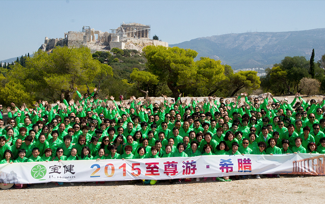
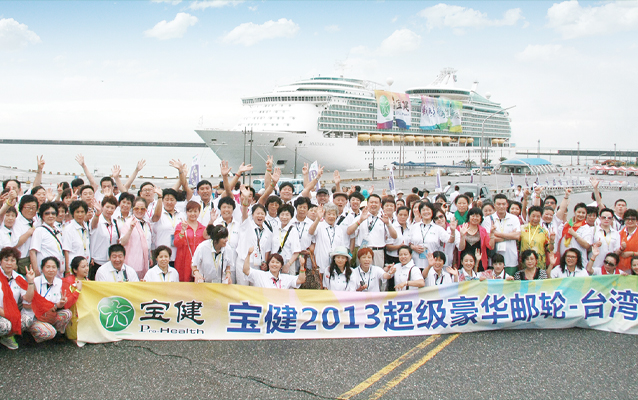
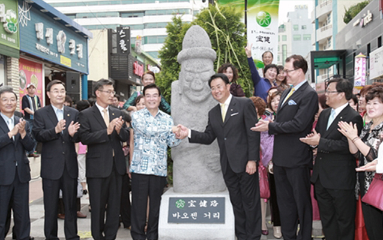
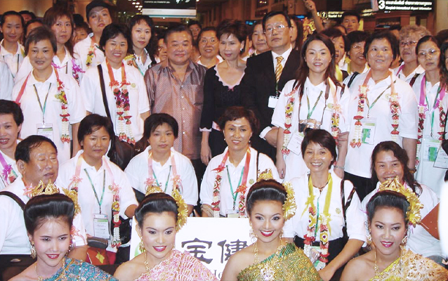
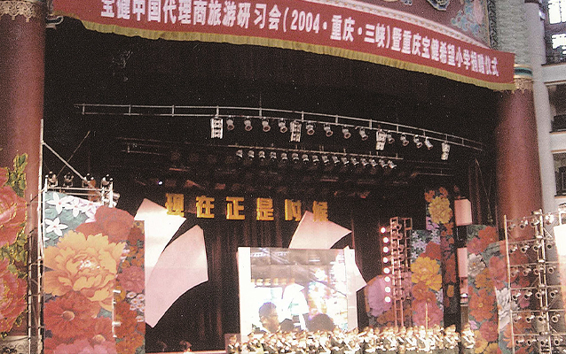
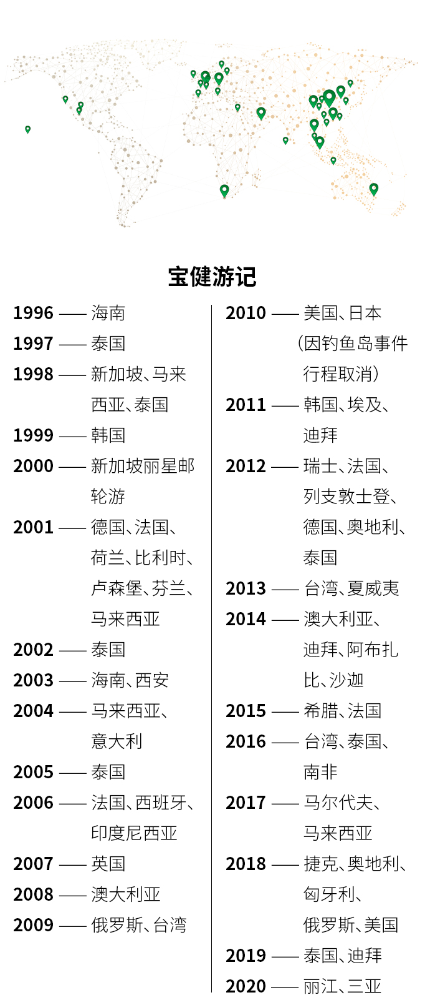

2021年，宝健25岁了。
这风雨兼程的25年，既是宝健在健康领域稳健发展的25年，也是宝健与所有员工、经销商以及社会大众互相成就、共同进步的25年。
宝健是一粒茁壮的健康之种，自1996年扎根中国、立足北京，便尽力汲取各方养分、拓展产品及事业枝干，历经25年，终于成长为一棵生机勃勃、绿意盎然的健康之树。
在“再生、免疫、活力、强化”的健康理念指引下，宝健的健康之树“硕果”累累，从营养到呼吸、从饮食到睡眠、从内里到外表……种类越来越多的产品，开始从多个层面影响并改变人们的日常生活。

宝健 是一个充满包容的舞台，为所有心怀梦想、敢于攀登的人提供一条没有成本和风险的创业之路，并用事实证明：每一份认真的付出都能获得回报，无关学历、身份或工作经验。
宝健是一艘扬帆的巨轮，在带你快速前行的同时，也不忘指引你流连两岸的风景。“努力工作，努力享受生活”，人生从来不是单选题，世界也远比想象中精彩，见过更多“世面”，才更能懂得生活的真谛。
宝健还是一片爱心融汇的海洋，从企业到爱心志愿者，约定捐出自己收入的百分之一，积少成多，为需要帮助的人带去希望。24年播撒爱、传播爱，昔日的涓涓细流如今终成浩瀚之势。
宝健25年的稳健成长，离不开每一位宝健人兢兢业业的奉献。
站在新起点上的宝健，会绘制出一份更加宏大、梦幻的幸福画卷。
尽罗天下宝，求添世人健。25岁的宝健做到了，而且还将做得更好！
宝健 自成立以来，一直致力于为广大国人提供高品质、安全的宝健产品。在不断的研发与创新过程中，宝健产品凭借放心原料、科学配方、先进工艺、完善管理等过硬实力，品质稳定，造福中国家庭，赢得无数赞誉与认可。

2007年，为给击剑队运动员补充身体的必要营养，帮助提升比赛成绩，国家体育总局对市面上所有产品进行的“海选”。经过层层严谨细致的筛选，并进行了详细调查比较之后，最终选定宝健产品为国家击剑队的奥运健儿提供全方位的营养支持和健康咨询。宝健自此开始与中国国家击剑队长达13年的合作。
时任领队王健表示，在选择指定产品合作伙伴的过程中，中国国家击剑队本着“谨慎、严格”的筛选原则，对产品品质、品牌形象、企业资质进行了综合考察，最终宝健产品凭借优越的品质脱颖而出！
十余年中，宝健产品助力中国国家击剑队，多次在世界级比赛中夺得佳绩：


宝健专注提升国人健康水平，由于中西方饮食差异、个体体质差异等原因，国外的健康产品并不完全适用于国人。宝健自公司成立之初，便联合国内外专家，研究中国人的饮食习惯和营养结构，树立起中国人专属的健康理念：
再生 —— 活化衰老细胞，增加新细胞生长，恢复身体机能，保持生命年轻态。
免疫 —— 调动并增强身体自身的防护力，预防病毒入侵，远离疾病的侵袭。
活力 —— 将营养能量转化为人体活力，支持细胞再生和各器官功能正常运作。
强化 —— 营养强化，对身体较弱的部分进行完善，并让整体的健康更进一步。
在此基础上，宝健研发出更适合中国人体质的营养保健产品，并不断丰富产品种类，如今已拥有横跨营养保健、美容护肤、日用护理、健康家居四大类别的近百种健康产品，均衡覆盖人们各方面的健康需求，帮助人们对身体健康进行科学合理的管理。
为了给消费者提供高品质的健康产品，宝健建立全面、系统的质量管理体系和严格的质量管理流程，从原料采集、生产监控、品质检验到成品出厂，每一道

国际研发团队： 依托国际高科技生产技术，引入行业先进设备，与法国ABC Texture 研究中心合作，紧跟国际潮流经验，反复研究调整，不断升级研发出更符合中国消费者健康需求的产品。

适宜国人配方： 在对不同人群、不同体质进行大量分析的基础上，参考国内外权威机构推荐标准，经过大量研究实验，精准设计适合国人的专属配方。
先进设备工艺： 不断提升加工工艺，各环节都采用国际先进技术，充分保持天然原料中营养成分的自然生物活性。

精良产品品质： 宝健引进整套全自动生产线，从原料进口、保存、生产到品管，都在中央信息中心控制下进行，生产环境完全符合国际公认的保健食品GMP 标准，保证每一批产品都具有极其精良的品质。
完善质管体系： 全面、系统的质量管理体系和严格的质量管理流程，严格按国家食品卫生、药用辅料标准及国际标准ISO执行。
磷脂维生素E胶囊 —— 全国保健食品百强畅销产品
中国国家击剑队推荐产品
2006年度最受百姓信赖的健康品牌放心保健品
磷脂、螺旋藻、初乳、乳钙 —— 中国保健品公信力产品
灵动胺糖钙、初乳、磷脂 —— 最畅销的十佳产品
食品安全示范单位
最受消费者欢迎产品
保健食品质量管理示范企业
初乳、辅酶Q10 —— 公信力产品
低聚果糖 —— ２014最受青睐的直销产品
谷维源 —— 2014年度最佳创新产品奖
宝健家居系列 —— 华筑奖
2017年度中国家居行业公信力品牌
宝健智能净水器 —— 第70届德国纽伦堡国际发明展
（iENA）上 企业创新产品大奖
台湾优质精品认证 创新第一品牌 精品设计奖
宝健AB套 —— 捷克国际创新发明展
健康照护与食品生物科学类金牌
美国硅谷发明节 生物科技类金牌大奖
臻颜 —— 世界品质品鉴大会国际品质特金奖
国际品质金奖
宝健实验室 —— ＣNAS认可证书
为更便捷地提供产品以及更好地服务消费者，宝健的生活馆和服务中心遍布全国。自1998年成立第一家健康生活馆以来，宝健至今已拥有遍布全国的近1500家服务网点。完善的客户服务体系及优越的退换货流程，更是让宝健从众多企业中脱颖而出。
宝健在全国建有1个总仓（北京）、7个分仓（西南仓、华北仓、山东仓、华东仓、华南仓、海南仓以及东北仓）。
WMS库存管理及DPS分拣线，单线分拣1000箱/小时，总和能力达7000箱/小时，日均吞吐15000件。大型ERP系统，智能化数据录入、分拣、盘点，快速缩短消费者从下单到收货的时间、保障产品完好无损到达消费者手中。
宝健在成立初期，就以保障消费者权益为要务，设立高于国标的【退换货制度】。承诺7天内已开封产品无因退货、60日未开封产品无因退货满意保证、保质期内因产品质量问题换货等制度，保障消费者退换货工作的有序开展，为消费者带来良好的退换货服务体验。
“良心、信心、耐心、责任心” ，宝健凭此吸引了无数志同道合的伙伴，共同构筑健康事业。在宝健稳定公平的平台上，成千上万的伙伴通过自己的努力脱颖而出，成为行业精英人士，让自己和家人过上了理想中的生活。
2005年起，宝健就携手共青团中央，实施青年自主创业项目。目前相关项目已覆盖全国多个地区。“1元钱也可以创业”的成功案例在创业者中成为佳话。
2005年：宝健携手共青团中央成立“中国青年创业 行动——宝健自主创业项目”。
2009年：宝健成为共青团中央确定的“青年就业创 业见习基地”，并成为“中国青年创业就 业基金会”原始发起人之一。
2013年：“宝健·青年自主创业就业项目”设立专 项基金，为创业者提供持久稳定的资金补 助、就业机会和保障，解决后顾之忧。
2018年：由中国青年创业就业基金会和宝健共同发 起的宝健精准扶贫自主创业项目启动，为 有意在零售领域创业就业的青年开展实用 技能培训，开展创业扶助。
2019年：宝健在广西南宁与团中央-中国青年创业 就业基金会携手启动精准扶贫青年自主创 业项目，以广西作为此项目的试点标杆，向 全国推广普及。
2020年：宝健在共青团中央支持下，面向全国十多 个地区开展了近20次“云”网络互动活 动，吸引了万余名渴望创业就业的参与者。
在宝健创业有保障，因为背靠“国家”。宝健携手中国青年创业就业基金会，合作实施宝健青年创业就业项目，通过公司业务拓展、经营模式创新、资金扶持、技能培训、信息服务等形式，开展的创业项目形式多样，已有12万伙伴在宝健平台实现创业就业梦，成功率高达95%。
在宝健就业很简单，会分享、懂健康，就能有一份属于自己的事业。 把自己体验之后真正觉得好的产品，真诚推荐给其他人，在帮助别人获得健康的同时，也分享了一种美好的生活方式，自己还能获得一份回报。不需要每天定点打卡，可以自由安排自己的时间；也不必担心薪不对岗，“多劳多得”的原则在这里被贯彻得很充分。
近年来顺应移动互联的发展，自带社交电商基因的安利，搭建了以安利微购为入口的安利云购社交电商平台，安利创客也可以借助公司以及第三方的各种社交平台进行展业。借助社交工具转发链接分享产品，就可以轻松获得一份收入，同时他人也能享受到安利好物和品质生活。
宝健为你的事业提供全力支持，帮你搞定研发、生产、运营、售后、培训……帮你设立网络社群，线上线下一起发力。你只需分享好用好物、好生活。
还有多重宝友权益奉上，全年都可享受各种惊喜福利；令人心动的精英奖励，让每位伙伴的付出都有相应回报，有车有房，走上人生巅峰！每年3-4次的旅游机会，和家人相伴走遍全世界。激动人心的未来明星争霸赛，超丰厚大奖，只要你敢冲，宝健就敢给。

健康 是生命的基础，丰富而有益的生活也是健康的一部分。宝健倡导努力工作，努力享受生活，许下“十年走遍全世界”的承诺，25年来举行 62次国内外旅游研习活动，带领超17万人次伙伴，去到全球33个国家和地区，行程榆5万公里。
2015年9月，李总带领宝健精英到希腊进行海外研习，入住世界十大著名酒店之一——雅典威斯汀酒店。然而细心的李总发现，酒店门口悬挂了一排多个国家的国旗，却唯独没有中国国旗。
李总找到酒店负责人询问，被告知：“酒店只挂经常光顾的国家客人的国旗，我们只在2009年江泽民先生访问希腊入住酒店时，悬挂过中国国旗。”李总反驳：“今天来了300位中国贵宾，现在的中国越来越强盛，难道我们这么多人都没有资格见证自己国家的国旗飘扬吗？”
酒店负责人被打动，当即派人专程买来了中国国旗，并高高悬挂在了第一根旗杆的位置，这是威斯汀酒店首次为企业升起国旗，让所有宝健伙伴们激动不已，为我们的祖国自豪，为宝健自豪。
2013年9月，宝健包下当时亚洲最大的邮轮，冠名“宝健号”，作为专属邮轮，承载着万名宝健伙伴，开启了以“新起点、新跨越、新发展”为主题的台湾之旅。这是台湾历史上首次包邮轮万人游活动，不仅引起了台湾的高度重视，甚至全球华人最大的国际民间慈善公益组织慈济特意为宝健开放参观。
慈济最早的“每人每天省下五角钱”与宝健倡导的“1%”理念有共通之处，李道总裁期盼透过参访慈济，在员工心中种下一颗美善的种子，让人人在纷扰中找回慈悲心与生命价值。
2011年9月，超过一万名宝健伙伴同赴韩国，学习“心大”的韩国人的敬业精神，人数创下韩国最大的单一企业旅行团记录，并书写了一段中韩民间交往的佳话。济州岛第一次使用外国企业名字命名商业文化街——宝健路，成为所有宝健人的骄傲。济州授予宝健总裁李道先生“荣誉岛民”证书，肯定宝健万人旅游团对济州岛乃至韩国的重大影响。
2010年 春，宝健将日本定为秋季海外研习的目的地，准备组织万人规模的旅游团赴日本旅行。当时恰值日本政府提出“观光立国”的国策，消息传出，引起了日本方面对宝健的高度重视。

2010年 春，宝健将日本定为秋季海外研习的目的地，准备组织万人规模的旅游团赴日本旅行。当时恰值日本政府提出“观光立国”的国策，消息传出，引起了日本方面对宝健的高度重视。
9月7日，钓鱼岛事件发生。为抗议日本在钓鱼岛事件中的不当行为，9月17日，宝健公司发布声明，“维护中国人的尊严，取消经过1年多策划与大手笔投入的万人团赴日旅游。”
这一决定获得了广大媒体和评论人士的关注，赢得了全国上下的一致喝彩。宝健永远站在祖国一边，不惜一切代价维护祖国和人民尊严！

2009年 10月，一万名宝健伙伴组成的超大型旅游团同游台湾，成为当时两岸旅游史上单一企业组织的最大旅游团，“关爱宝岛 健我中华”的主题，为两岸民间交流打下扎实的民意基础。
2005年 9月，宝健举办以“年轻的心 感悟美丽”为主题的泰国游，7000位宝健精英在曼谷和芭堤雅享受缤纷之旅，创下了国内单一企业海外旅游演习活动最高人数的记录，还得到了泰国长公主邬汶乐及泰国总理的亲切接见！
2004年 11月，4000名宝健精英登上长江三峡豪华邮轮，总结全年的工作成果，激情畅想未来。因人数众多，这次旅游共动用了16航次，创造了重庆三峡接待单一团体游客数量最高的历史记录。
